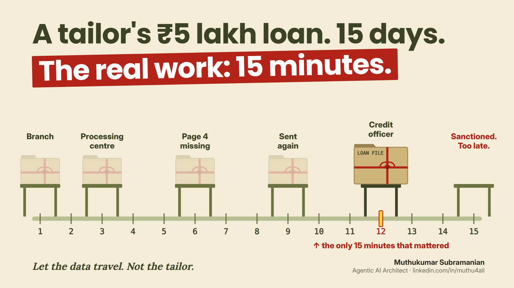
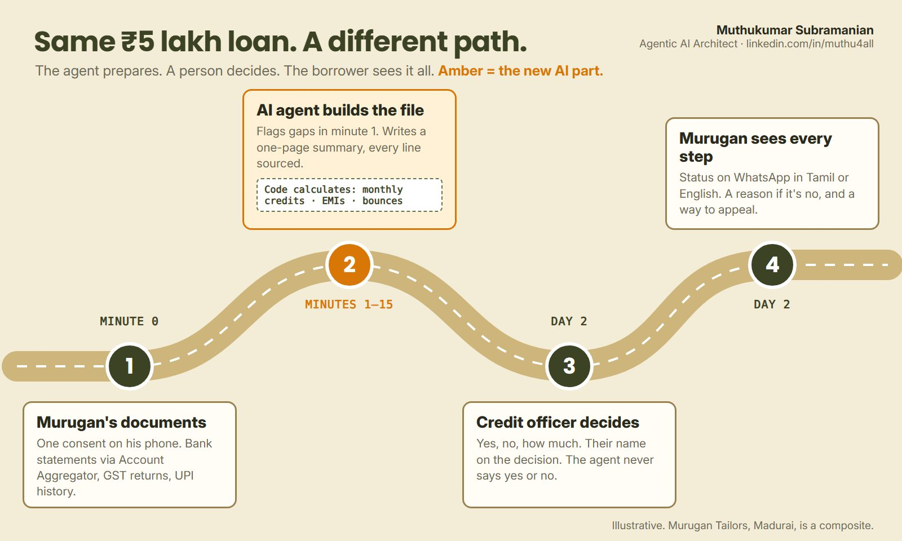
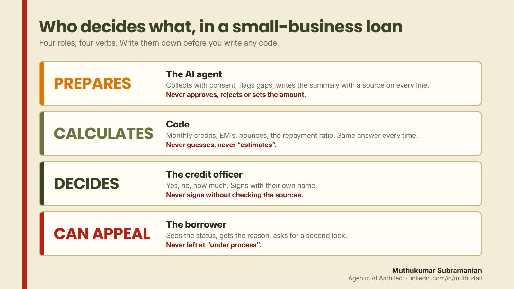
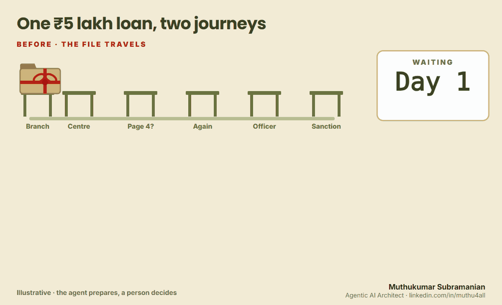

A Tailor Waited 15 Days for a ₹5 Lakh Loan. The Real Work Took 15 Minutes.
By Muthukumar Subramanian · Agentic AI Architect

Murugan runs a tailoring shop near the Meenakshi temple in Madurai. Six machines, four people, and a waiting list every wedding season. In early December he gets the order of his year: 40 bridal blouses for one family, due before Thai.
He needs two more machines. He applies for a ₹5 lakh business loan at his bank on a Monday morning, with everything they ask for in a plastic folder.
Then he waits.
Day 3, the file goes to a processing centre in another city. Day 6, someone notices page 4 of a bank statement is missing. The file comes back. Murugan closes the shop for half a day to bring it in. Day 9, it goes out again. Day 12, a credit officer finally reads it. Day 15, the loan is sanctioned.
By then the family had given half the order to another tailor.
Here's the part that stings. For a file this simple, the actual checking (read the statements, match the GST returns, work out what he can repay) is maybe 15 minutes of focused work. The other 14 days and 23 hours are the file moving between desks. (Murugan, his shop and every number here are illustrative. The pattern is very real.)
The problem: the work is small, the waiting is big
Small loans are expensive to process for what they earn, so they go to the back of the queue. And the file is built by hand:
→ Documents arrive as paper or blurry phone photos, so someone checks them page by page
→ Gaps are found late, one at a time, and each one costs days
→ The person who checks isn't the person who decides, and neither talks to the borrower
→ The borrower can't see where the file is. "It's under process" is the whole status
None of this is about whether Murugan is a good borrower. It's about desks.
A loan file shouldn't need a bus ticket.
The solution: an agent builds the file, a person decides
I'd put an underwriting assistant (an AI agent) at the start, not the end. Its job is to prepare, never to approve.
Here's how it would work for Murugan:
- He gives consent once, on his phone. Through the Account Aggregator framework, his bank statements, and his GST returns if he's registered, flow to the lender digitally. RBI created Account Aggregators as a licensed category in 2016, the network went live in 2021, and GST data was brought in later as a source. No folder, no missing page 4.
- The agent reads everything and flags gaps in the first minute, not on day 6. "GST return for August not found. Ask Murugan or note it."
- Code, not the model, calculates the numbers. Average monthly credits, UPI collections from customers, existing EMIs, cheque bounces. Fixed formulas, same answer every time.
- The agent writes a one-page summary where every line points to its source document. Then it stops.
- A credit officer reads it and decides, with their name on the decision.
- Murugan sees the status on WhatsApp in plain Tamil or English: received, complete, with the officer, decided. If it's a no, he gets the reason and a way to ask for a second look.

There's bigger plumbing coming too. RBI's Unified Lending Interface (ULI), piloted in 2023 and named in August 2024, connects lenders to data like GST records and land records through standard APIs. Business Standard reported 64 lenders on it by the end of 2025, so it's early, but it's the same idea: the data travels, not the borrower.
Who decides what
This is the part I'd write down before writing any code. If the agent's role is fuzzy, it will slowly become the approver, and nobody will notice.

The agent prepares. Code calculates. A person decides. The borrower can push back. Keep those four verbs separate and you can explain any decision to an auditor, to RBI, or to Murugan.
Watch it work

The hard parts
→ Thin files. Plenty of tailors, kirana owners and auto drivers aren't GST-registered and run part of their business in cash. The agent can only read what exists. UPI history helps; it isn't everything.
→ The summary can be wrong. A model can misread a statement or make up a tidy sentence. That's why every line must cite its source, and why ratios come from code.
→ Rubber-stamping. When the file looks perfect, officers stop reading. Track how often they disagree with the draft. If it's zero, that's a warning, not a win.
→ Bias moves faster. If past approvals were unfair to certain areas or trades, an agent trained on them repeats it at speed. Someone has to check outcomes by trade, area and gender.
→ Consent and privacy. Bank statements are some of the most personal data a person has. Ask for only what the loan needs, keep it only as long as the loan needs it, and tell the borrower in plain words.
There's a new role in the middle of this. A forward deployed engineer (FDE) is an engineer who works inside the customer's team rather than at head office, on their real systems and files. For a lender, that's someone who spends three weeks with the credit team, sits through 50 real files, and finds out which checks matter and which are habit. The title is still settling across companies. The work is what makes the agent useful.
The opportunity
→ For banks and NBFCs: small-ticket business loans are where the turnaround is worst and the volume is biggest. Cut 15 days to two and you win the borrower who'd otherwise go to the moneylender.
→ For fintechs and IT services firms: underwriting assistants built on Account Aggregator and ULI rails, sold with the boring parts done properly: source citations, audit logs, a decision screen for the officer, and a status page for the borrower.
→ For MSME owners: keep your UPI collections in your business account and file your returns on time, if you're registered. Your digital trail is now your collateral story.
→ For everyone else: when someone in your family applies for a loan, ask the lender one question: "Who decides, and how will I know the status?"
Your turn 👇
Would you accept a loan decision if an AI agent prepared the file and a named officer signed it? Yes or no.
Tag a friend who runs a small shop and has waited on a loan.